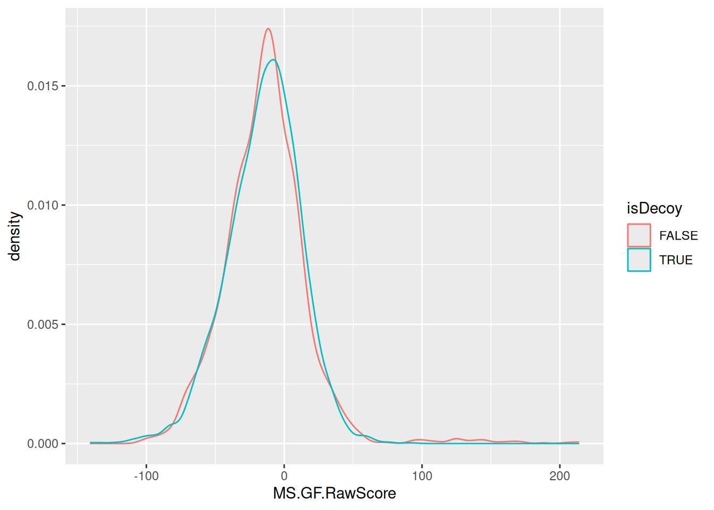
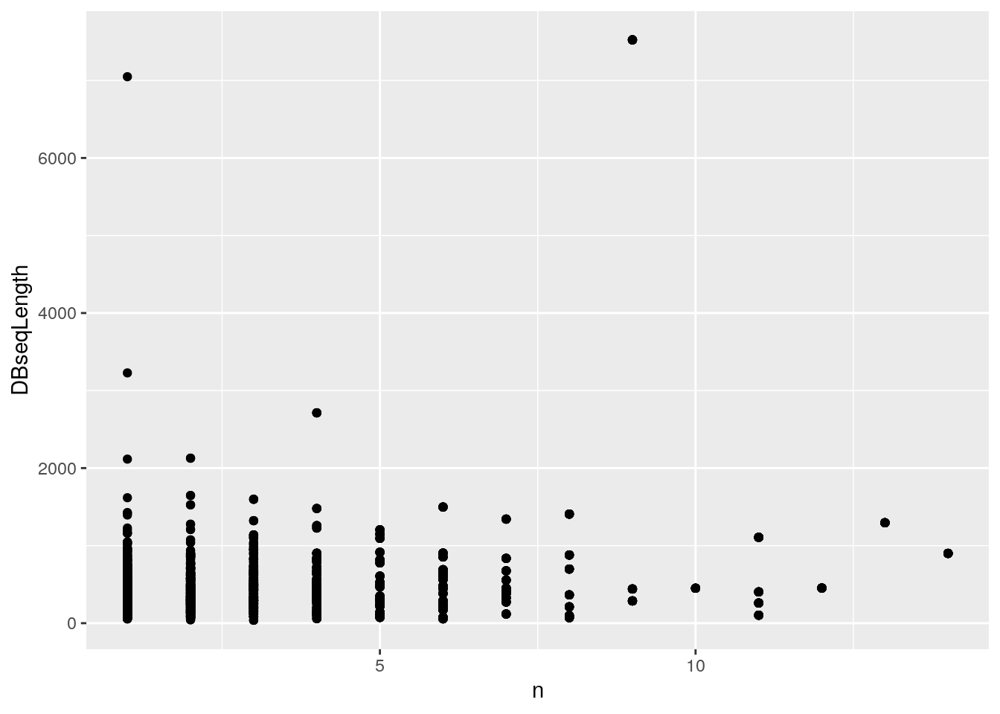
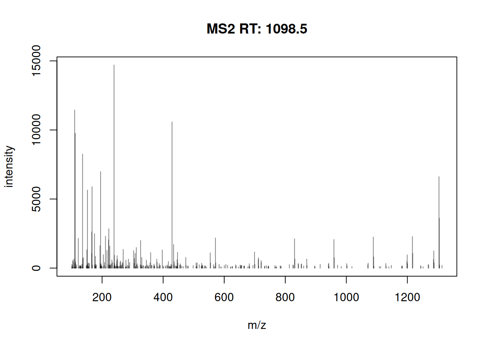
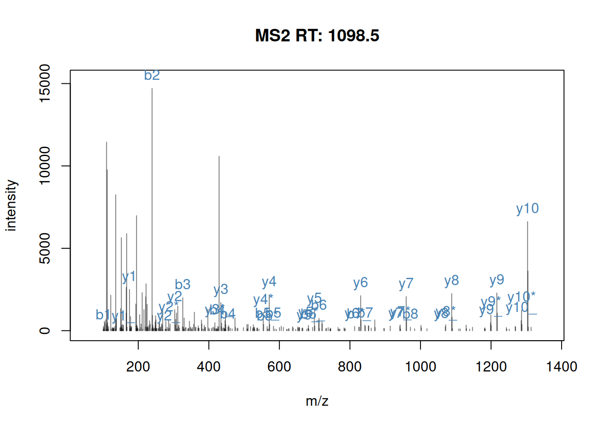
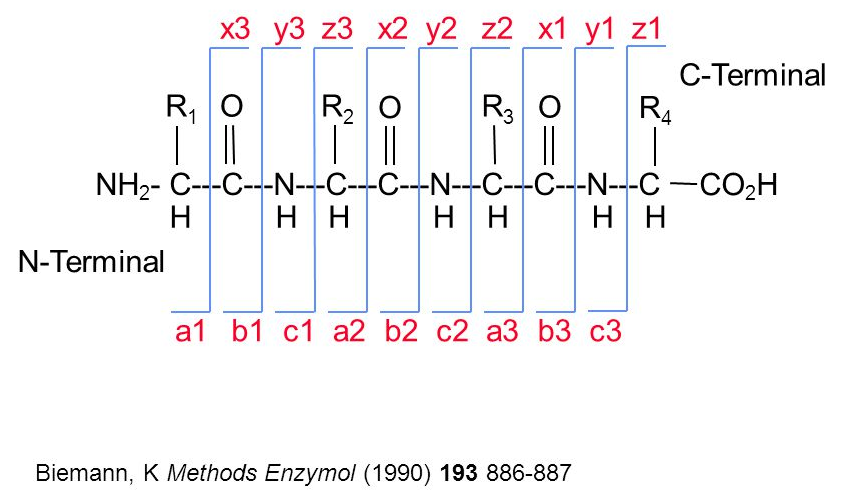
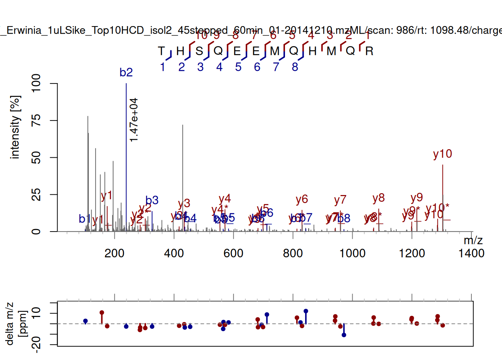
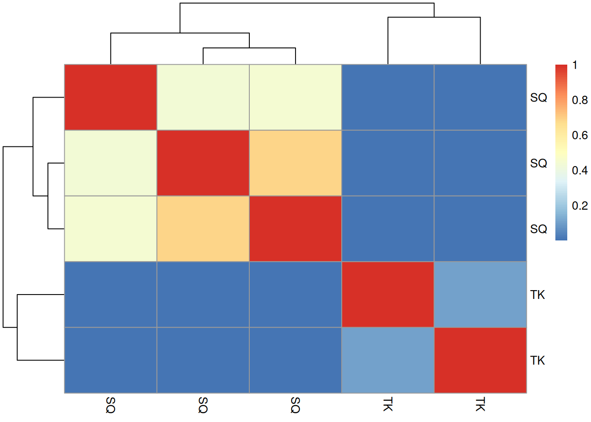

(mzmls <- paste0("file_", 1:3, ".mzML"))
## [1] "file_1.mzML" "file_2.mzML" "file_3.mzML"
(mzids <- sub("mzML", "mzid", mzmls))
## [1] "file_1.mzid" "file_2.mzid" "file_3.mzid"
paste0("java -jar /path/to/MSGFPlus.jar",
" -s ", mzmls,
" -o ", mzids,
" -d uniprot.fas",
" -t 20ppm",
" -m 0",
" int 1")
## [1] "java -jar /path/to/MSGFPlus.jar -s file_1.mzML -o file_1.mzid -d uniprot.fas -t 20ppm -m 0 int 1"
## [2] "java -jar /path/to/MSGFPlus.jar -s file_2.mzML -o file_2.mzid -d uniprot.fas -t 20ppm -m 0 int 1"
## [3] "java -jar /path/to/MSGFPlus.jar -s file_3.mzML -o file_3.mzid -d uniprot.fas -t 20ppm -m 0 int 1"3 Identification data
Peptide identification is performed using third-party software - there is no package to run these searches directly in R. When using command line search engines it possible to hard-code or automatically generate the search command lines and run them from R using a system() call. This allows to generate these reproducibly (especially useful if many command lines need to be run) and to keep a record in the R script of the exact command.
The example below illustrates this for 3 mzML files to be searched using MSGFplus:
3.1 Identification data.frame
Let’s use the identification from MsDataHub:
idf <- MsDataHub::TMT_Erwinia_1uLSike_Top10HCD_isol2_45stepped_60min_01.20141210.mzid()
## OpenTelemetry error: there is no package called 'otelsdk'
## OpenTelemetry error: there is no package called 'otelsdk'
## see ?MsDataHub and browseVignettes('MsDataHub') for documentation
## loading from cache
idf
## EH7807
## "/opt/R-cache/R/ExperimentHub/ff6de9f5cf_7857"The easiest way to read identification data in mzIdentML (often abbreviated with mzid) into R is to read it with the PSM() constructor function from the PSMatch package1. The function will parse the file and return a DataFrame.
library(PSMatch)
id <- PSM(idf)
dim(id)
## [1] 5802 35
names(id)
## [1] "sequence" "spectrumID"
## [3] "chargeState" "rank"
## [5] "passThreshold" "experimentalMassToCharge"
## [7] "calculatedMassToCharge" "peptideRef"
## [9] "modNum" "isDecoy"
## [11] "post" "pre"
## [13] "start" "end"
## [15] "DatabaseAccess" "DBseqLength"
## [17] "DatabaseSeq" "DatabaseDescription"
## [19] "scan.number.s." "acquisitionNum"
## [21] "spectrumFile" "idFile"
## [23] "MS.GF.RawScore" "MS.GF.DeNovoScore"
## [25] "MS.GF.SpecEValue" "MS.GF.EValue"
## [27] "MS.GF.QValue" "MS.GF.PepQValue"
## [29] "modPeptideRef" "modName"
## [31] "modMass" "modLocation"
## [33] "subOriginalResidue" "subReplacementResidue"
## [35] "subLocation"
NoteQuestion
Verify that this table contains 5802 matches for 5343 scans and 4938 peptides sequences.
The PSM data are read as is, without any filtering. As we can see below, we still have all the hits from the forward and reverse (decoy) databases.
table(id$isDecoy)
##
## FALSE TRUE
## 2906 28963.2 Keeping all matches
The data also contains multiple matches for several spectra. The table below shows the number of number of spectra that have 1, 2, … up to 5 matches.
Below, we can see how scan 1774 has 4 matches, all to sequence RTRYQAEVR, which itself matches to 4 different proteins:
i <- which(id$spectrumID == "controllerType=0 controllerNumber=1 scan=1774")
data.frame(id[i, ])[1:5]
## sequence spectrumID
## EH7807.1381 RTRYQAEVR controllerType=0 controllerNumber=1 scan=1774
## EH7807.1382 RTRYQAEVR controllerType=0 controllerNumber=1 scan=1774
## EH7807.1383 RTRYQAEVR controllerType=0 controllerNumber=1 scan=1774
## EH7807.2477 RTRYQAEVR controllerType=0 controllerNumber=1 scan=1774
## chargeState rank passThreshold
## EH7807.1381 2 1 TRUE
## EH7807.1382 2 1 TRUE
## EH7807.1383 2 1 TRUE
## EH7807.2477 2 1 TRUEIf the goal is to keep all the matches, but arranged by scan/spectrum, one can reduce the PSM object by the spectrumID variable, so that each scan correponds to a single row that still stores all values2:
id2 <- reducePSMs(id, id$spectrumID)
id2
## Reduced PSM with 5343 rows and 35 columns.
## names(35): sequence spectrumID ... subReplacementResidue subLocationThe resulting object contains a single entry for scan 1774 with information for the multiple matches stored as lists within the cells.
j <- which(id2$spectrumID == "controllerType=0 controllerNumber=1 scan=1774")
id2[j, ]
## Reduced PSM with 1 rows and 35 columns.
## names(35): sequence spectrumID ... subReplacementResidue subLocationid2[j, "DatabaseAccess"]
## CharacterList of length 1
## [["controllerType=0 controllerNumber=1 scan=1774"]] ECA2104 ... ECA4142The is the type of complete identification table that could be used to annotate an raw mass spectrometry Spectra object, as shown below.
3.3 Filtering data
Often, the PSM data is filtered to only retain reliable matches. The MSnID package can be used to set thresholds to attain user-defined PSM, peptide or protein-level FDRs. Here, we will simply filter out wrong identification manually.
Here, the filter() from the dplyr package comes very handy. We will thus start by converting the DataFrame to a tibble.
library("dplyr")
id_tbl <- tidyr::as_tibble(id)
id_tbl
## # A tibble: 5,802 × 35
## sequence spectrumID chargeState rank passThreshold
## <chr> <chr> <int> <int> <lgl>
## 1 RQCRTDFLNYLR controllerType=0… 3 1 TRUE
## 2 ESVALADQVTCVDWRNRKATKK controllerType=0… 2 1 TRUE
## 3 KELLCLAMQIIR controllerType=0… 2 1 TRUE
## 4 QRMARTSDKQQSIRFLERLCGR controllerType=0… 3 1 TRUE
## 5 KDEGSTEPLKVVRDMTDAICMLLR controllerType=0… 3 1 TRUE
## 6 DGGPAIYGHERVGRNAKKFKCLKFR controllerType=0… 3 1 TRUE
## # ℹ 5,796 more rows
## # ℹ 30 more variables: experimentalMassToCharge <dbl>, …
NoteQuestion
- Remove decoy hits
NoteSolution
id_tbl <- id_tbl |>
filter(!isDecoy)
id_tbl
## # A tibble: 2,906 × 35
## sequence spectrumID chargeState rank passThreshold
## <chr> <chr> <int> <int> <lgl>
## 1 RQCRTDFLNYLR controllerType… 3 1 TRUE
## 2 ESVALADQVTCVDWRNRKATKK controllerType… 2 1 TRUE
## 3 QRMARTSDKQQSIRFLERLCGR controllerType… 3 1 TRUE
## 4 DGGPAIYGHERVGRNAKKFKCLKFR controllerType… 3 1 TRUE
## 5 QRMARTSDKQQSIRFLERLCGR controllerType… 2 1 TRUE
## 6 CIDRARHVEVQIFGDGKGRVVALGER… controllerType… 3 1 TRUE
## # ℹ 2,900 more rows
## # ℹ 30 more variables: experimentalMassToCharge <dbl>, …
NoteQuestion
- Keep first rank matches
NoteSolution
id_tbl <- id_tbl |>
filter(rank == 1)
id_tbl
## # A tibble: 2,751 × 35
## sequence spectrumID chargeState rank passThreshold
## <chr> <chr> <int> <int> <lgl>
## 1 RQCRTDFLNYLR controllerType… 3 1 TRUE
## 2 ESVALADQVTCVDWRNRKATKK controllerType… 2 1 TRUE
## 3 QRMARTSDKQQSIRFLERLCGR controllerType… 3 1 TRUE
## 4 DGGPAIYGHERVGRNAKKFKCLKFR controllerType… 3 1 TRUE
## 5 QRMARTSDKQQSIRFLERLCGR controllerType… 2 1 TRUE
## 6 CIDRARHVEVQIFGDGKGRVVALGER… controllerType… 3 1 TRUE
## # ℹ 2,745 more rows
## # ℹ 30 more variables: experimentalMassToCharge <dbl>, …
NoteQuestion
- Remove shared peptides. Start by identifying scans that match different proteins. For example scan 4884 matches proteins
XXX_ECA3406andECA3415. Scan 4099 matchXXX_ECA4416_1,XXX_ECA4416_2andXXX_ECA4416_3. Then remove the scans that match any of these proteins.
NoteSolution
mltm <-
id_tbl |>
group_by(spectrumID) |>
mutate(nProts = length(unique(DatabaseAccess))) |>
filter(nProts > 1) |>
select(spectrumID, nProts)
mltm
## # A tibble: 85 × 2
## # Groups: spectrumID [39]
## spectrumID nProts
## <chr> <int>
## 1 controllerType=0 controllerNumber=1 scan=1073 2
## 2 controllerType=0 controllerNumber=1 scan=1073 2
## 3 controllerType=0 controllerNumber=1 scan=6578 2
## 4 controllerType=0 controllerNumber=1 scan=6578 2
## 5 controllerType=0 controllerNumber=1 scan=5617 2
## 6 controllerType=0 controllerNumber=1 scan=5617 2
## # ℹ 79 more rowsid_tbl <-
id_tbl |>
filter(!spectrumID %in% mltm$spectrumID)
id_tbl
## # A tibble: 2,666 × 35
## sequence spectrumID chargeState rank passThreshold
## <chr> <chr> <int> <int> <lgl>
## 1 RQCRTDFLNYLR controllerType… 3 1 TRUE
## 2 ESVALADQVTCVDWRNRKATKK controllerType… 2 1 TRUE
## 3 QRMARTSDKQQSIRFLERLCGR controllerType… 3 1 TRUE
## 4 DGGPAIYGHERVGRNAKKFKCLKFR controllerType… 3 1 TRUE
## 5 QRMARTSDKQQSIRFLERLCGR controllerType… 2 1 TRUE
## 6 CIDRARHVEVQIFGDGKGRVVALGER… controllerType… 3 1 TRUE
## # ℹ 2,660 more rows
## # ℹ 30 more variables: experimentalMassToCharge <dbl>, …Which leaves us with 2666 PSMs.
This can also be achieved with the filterPSMs() function, or the individual filterPsmRank(), filterPsmDecoy and filterPsmShared() functions:
id_filtered <- filterPSMs(id)
## Starting with 5802 PSMs:
## Removed 2896 decoy hits.
## Removed 155 PSMs with rank > 1.
## Removed 85 shared peptides.
## 2666 PSMs left.The describePeptides() and describeProteins() functions from the PSMatch package provide useful summaries of preptides and proteins in a PSM search result.
-
describePeptides()gives the number of unique and shared peptides and for the latter, the size of their protein groups:
describePeptides(id) ## before filtering
## 4938 peptides composed of
## unique peptides: 4870
## shared peptides (among protein):
## 54(2) 8(3) 5(4) 1(5)
describePeptides(id_filtered) ## filtered
## 2324 peptides composed of
## unique peptides: 2324
## shared peptides (among protein):
## ()-
describeProteins()gives the number of proteins defined by only unique, only shared, or a mixture of unique/shared peptides:
describeProteins(id) ## before filtering
## 3148 proteins composed of
## only unique peptides: 3051
## only shared peptides: 74
## unique and shared peptides: 23
describeProteins(id_filtered) ## filtered
## 1466 proteins composed of
## only unique peptides: 1466
## only shared peptides: 0
## unique and shared peptides: 0The Understanding protein groups with adjacency matrices PSMatch vignette provides additional tools to explore how proteins were inferred from peptides.
NoteQuestion
Compare the distribution of raw identification scores of the decoy and non-decoy hits. Interpret the figure.
NoteSolution
library(ggplot2)
ggplot(id, aes(x = MS.GF.RawScore,
colour = isDecoy)) +
geom_density()
NoteQuestion
The tidyverse tools are fit for data wrangling with identification data. Using the above identification dataframe, calculate the length of each peptide (you can use nchar with the peptide sequence sequence) and the number of peptides for each protein (defined as DatabaseDescription). Plot the length of the proteins against their respective number of peptides.
NoteSolution
suppressPackageStartupMessages(library("dplyr"))
iddf <- as_tibble(id_filtered) |>
mutate(peplen = nchar(sequence))
npeps <- iddf |>
group_by(DatabaseAccess) |>
tally()
iddf <- full_join(iddf, npeps)
## Joining with `by = join_by(DatabaseAccess)`
library("ggplot2")
ggplot(iddf, aes(x = n, y = DBseqLength)) + geom_point()
If you would like to learn more about how the mzid data are handled by PSMatch via the mzR and mzID packages, check out the 6.2 section in the annex.
3.4 Adding identification data to raw data
We are goind to use the sp object created in the previous chapter and the id_filtered variable generated above.
## This will fetch the cached file
mzf <- rpx::pxget(rpx::PXDataset("PXD000001"), "TMT_Erwinia_1uLSike_Top10HCD_isol2_45stepped_60min_01-20141210.mzML")
## Loading PXD000001 from cache.
## Loading TMT_Erwinia_1uLSike_Top10HCD_isol2_45stepped_60min_01-20141210.mzML from cache.
sp <- Spectra(mzf)
sp
## MSn data (Spectra) with 7534 spectra in a MsBackendMzR backend:
## msLevel rtime scanIndex
## <integer> <numeric> <integer>
## 1 1 0.4584 1
## 2 1 0.9725 2
## 3 1 1.8524 3
## 4 1 2.7424 4
## 5 1 3.6124 5
## ... ... ... ...
## 7530 2 3600.47 7530
## 7531 2 3600.83 7531
## 7532 2 3601.18 7532
## 7533 2 3601.57 7533
## 7534 2 3601.98 7534
## ... 34 more variables/columns.
##
## file(s):
## 853174f95_TMT_Erwinia_1uLSike_Top10HCD_isol2_45stepped_60min_01-20141210.mzMLIdentification data (as a DataFrame) can be merged into raw data (as a Spectra object) by adding new spectra variables to the appropriate MS2 spectra. Scans and peptide-spectrum matches can be matched by their spectrum identifers.
NoteQuestion
Identify the spectum identifier columns in the sp the id_filtered variables.
NoteSolution
In the raw data, it is encoded as spectrumId, while in the identification data, we have spectrumID.
head(id_filtered$spectrumID)
## [1] "controllerType=0 controllerNumber=1 scan=2949"
## [2] "controllerType=0 controllerNumber=1 scan=6534"
## [3] "controllerType=0 controllerNumber=1 scan=4782"
## [4] "controllerType=0 controllerNumber=1 scan=6118"
## [5] "controllerType=0 controllerNumber=1 scan=4757"
## [6] "controllerType=0 controllerNumber=1 scan=6518"
head(sp$spectrumId)
## [1] "controllerType=0 controllerNumber=1 scan=1"
## [2] "controllerType=0 controllerNumber=1 scan=2"
## [3] "controllerType=0 controllerNumber=1 scan=3"
## [4] "controllerType=0 controllerNumber=1 scan=4"
## [5] "controllerType=0 controllerNumber=1 scan=5"
## [6] "controllerType=0 controllerNumber=1 scan=6"We still have several PTMs that are matched to a single spectrum identifier:
Let’s look at "controllerType=0 controllerNumber=1 scan=5490", the has 4 matching PSMs in detail.
which(table(id_filtered$spectrumID) == 4)
## controllerType=0 controllerNumber=1 scan=5490
## 1903
id_4 <- id_filtered[id_filtered$spectrumID == "controllerType=0 controllerNumber=1 scan=5490", ] |>
as.data.frame()
id_4
## sequence spectrumID
## EH7807.23 KCNQCLKVACTLFYCK controllerType=0 controllerNumber=1 scan=5490
## EH7807.24 KCNQCLKVACTLFYCK controllerType=0 controllerNumber=1 scan=5490
## EH7807.25 KCNQCLKVACTLFYCK controllerType=0 controllerNumber=1 scan=5490
## EH7807.26 KCNQCLKVACTLFYCK controllerType=0 controllerNumber=1 scan=5490
## chargeState rank passThreshold experimentalMassToCharge
## EH7807.23 3 1 TRUE 698.6633
## EH7807.24 3 1 TRUE 698.6633
## EH7807.25 3 1 TRUE 698.6633
## EH7807.26 3 1 TRUE 698.6633
## calculatedMassToCharge peptideRef modNum isDecoy post pre start
## EH7807.23 698.3315 Pep453 4 FALSE C K 127
## EH7807.24 698.3315 Pep453 4 FALSE C K 127
## EH7807.25 698.3315 Pep453 4 FALSE C K 127
## EH7807.26 698.3315 Pep453 4 FALSE C K 127
## end DatabaseAccess DBseqLength DatabaseSeq
## EH7807.23 142 ECA0668 302
## EH7807.24 142 ECA0668 302
## EH7807.25 142 ECA0668 302
## EH7807.26 142 ECA0668 302
## DatabaseDescription scan.number.s. acquisitionNum
## EH7807.23 ECA0668 hypothetical protein 5490 5490
## EH7807.24 ECA0668 hypothetical protein 5490 5490
## EH7807.25 ECA0668 hypothetical protein 5490 5490
## EH7807.26 ECA0668 hypothetical protein 5490 5490
## spectrumFile
## EH7807.23 TMT_Erwinia_1uLSike_Top10HCD_isol2_45stepped_60min_01-20141210.mzML
## EH7807.24 TMT_Erwinia_1uLSike_Top10HCD_isol2_45stepped_60min_01-20141210.mzML
## EH7807.25 TMT_Erwinia_1uLSike_Top10HCD_isol2_45stepped_60min_01-20141210.mzML
## EH7807.26 TMT_Erwinia_1uLSike_Top10HCD_isol2_45stepped_60min_01-20141210.mzML
## idFile MS.GF.RawScore MS.GF.DeNovoScore MS.GF.SpecEValue
## EH7807.23 ff6de9f5cf_7857 -22 79 4.555588e-07
## EH7807.24 ff6de9f5cf_7857 -22 79 4.555588e-07
## EH7807.25 ff6de9f5cf_7857 -22 79 4.555588e-07
## EH7807.26 ff6de9f5cf_7857 -22 79 4.555588e-07
## MS.GF.EValue MS.GF.QValue MS.GF.PepQValue modPeptideRef
## EH7807.23 1.307689 0.9006211 0.8901099 Pep453
## EH7807.24 1.307689 0.9006211 0.8901099 Pep453
## EH7807.25 1.307689 0.9006211 0.8901099 Pep453
## EH7807.26 1.307689 0.9006211 0.8901099 Pep453
## modName modMass modLocation subOriginalResidue
## EH7807.23 Carbamidomethyl 57.02146 2 <NA>
## EH7807.24 Carbamidomethyl 57.02146 5 <NA>
## EH7807.25 Carbamidomethyl 57.02146 10 <NA>
## EH7807.26 Carbamidomethyl 57.02146 15 <NA>
## subReplacementResidue subLocation
## EH7807.23 <NA> NA
## EH7807.24 <NA> NA
## EH7807.25 <NA> NA
## EH7807.26 <NA> NAWe can see that these 4 PSMs differ by the location of the Carbamidomethyl modification.
id_4[, c("modName", "modLocation")]
## modName modLocation
## EH7807.23 Carbamidomethyl 2
## EH7807.24 Carbamidomethyl 5
## EH7807.25 Carbamidomethyl 10
## EH7807.26 Carbamidomethyl 15Let’s reduce that PSM table before joining it to the Spectra object, to make sure we have unique one-to-one matches between the raw spectra and the PSMs.
id_filtered <- reducePSMs(id_filtered, id_filtered$spectrumID)
id_filtered
## Reduced PSM with 2646 rows and 35 columns.
## names(35): sequence spectrumID ... subReplacementResidue subLocationThese two data can thus simply be joined using:
sp <- joinSpectraData(sp, id_filtered,
by.x = "spectrumId",
by.y = "spectrumID")
spectraVariables(sp)
## [1] "msLevel" "rtime"
## [3] "acquisitionNum" "scanIndex"
## [5] "dataStorage" "dataOrigin"
## [7] "centroided" "smoothed"
## [9] "polarity" "precScanNum"
## [11] "precursorMz" "precursorIntensity"
## [13] "precursorCharge" "collisionEnergy"
## [15] "isolationWindowLowerMz" "isolationWindowTargetMz"
## [17] "isolationWindowUpperMz" "peaksCount"
## [19] "totIonCurrent" "basePeakMZ"
## [21] "basePeakIntensity" "electronBeamEnergy"
## [23] "ionisationEnergy" "lowMZ"
## [25] "highMZ" "mergedScan"
## [27] "mergedResultScanNum" "mergedResultStartScanNum"
## [29] "mergedResultEndScanNum" "injectionTime"
## [31] "filterString" "spectrumId"
## [33] "ionMobilityDriftTime" "scanWindowLowerLimit"
## [35] "scanWindowUpperLimit" "sequence"
## [37] "chargeState" "rank"
## [39] "passThreshold" "experimentalMassToCharge"
## [41] "calculatedMassToCharge" "peptideRef"
## [43] "modNum" "isDecoy"
## [45] "post" "pre"
## [47] "start" "end"
## [49] "DatabaseAccess" "DBseqLength"
## [51] "DatabaseSeq" "DatabaseDescription"
## [53] "scan.number.s." "acquisitionNum.y"
## [55] "spectrumFile" "idFile"
## [57] "MS.GF.RawScore" "MS.GF.DeNovoScore"
## [59] "MS.GF.SpecEValue" "MS.GF.EValue"
## [61] "MS.GF.QValue" "MS.GF.PepQValue"
## [63] "modPeptideRef" "modName"
## [65] "modMass" "modLocation"
## [67] "subOriginalResidue" "subReplacementResidue"
## [69] "subLocation"
NoteQuestion
Verify that the identification data has been added to the correct spectra.
NoteSolution
Let’s first verify that no identification data has been added to the MS1 scans.
They have indeed been added to 2646 of the 6103 MS2 spectra.
Let’s compare the precursor (experimental) and peptide (calculated) mass to charges
3.5 An identification-annotated chromatogram
Now that we have combined raw data and their associated peptide-spectrum matches, we can produce an improved total ion chromatogram, identifying MS1 scans that lead to successful identifications.
The countIdentifications() function is going to tally the number of identifications (i.e non-missing characters in the sequence spectra variable) for each scan. In the case of MS2 scans, these will be either 1 or 0, depending on the presence of a sequence. For MS1 scans, the function will count the number of sequences for the descendant MS2 scans, i.e. those produced from precursor ions from each MS1 scan.
sp <- countIdentifications(sp)Below, we see on the second line that 3457 MS2 scans lead to no PSM, while 2546 lead to an identification. Among all MS1 scans, 833 lead to no MS2 scans with PSMs. 30 MS1 scans generated one MS2 scan that lead to a PSM, 45 lead to two PSMs, …
table(msLevel(sp), sp$countIdentifications)
##
## 0 1 2 3 4 5 6 7 8 9 10
## 1 833 30 45 97 139 132 92 42 17 3 1
## 2 3457 2646 0 0 0 0 0 0 0 0 0These data can also be visualised on the total ion chromatogram:
3.6 Visualising peptide-spectrum matches
Let’s choose a MS2 spectrum with a high identification score and plot it.
i <- which(sp$MS.GF.RawScore > 100)[1]
plotSpectra(sp[i])
We have seen above that we can add labels to each peak using the labels argument in plotSpectra(). The labelFragments() function takes a spectrum as input (that is a Spectra object of length 1) and annotates its peaks.
labelFragments(sp[i])
## $THSQEEMQHMQR
## [1] NA NA NA "b1" NA NA NA NA NA NA
## [11] NA NA NA NA NA NA NA NA NA NA
## [21] NA NA NA NA NA NA NA NA NA NA
## [31] NA NA NA NA NA NA NA NA NA NA
## [41] NA NA NA "y1_" NA NA NA NA NA "y1"
## [51] NA NA NA NA NA NA NA NA NA NA
## [61] NA NA NA NA NA NA NA NA NA NA
## [71] NA NA NA NA NA NA NA NA NA NA
## [81] NA NA NA NA NA NA "b2" NA NA NA
## [91] NA NA NA NA NA NA NA NA NA NA
## [101] NA NA NA NA NA NA NA NA NA NA
## [111] NA NA NA NA NA NA NA "y2_" "y2*" NA
## [121] NA "y2" NA NA NA NA NA NA NA NA
## [131] NA NA "b3" NA NA NA NA NA NA NA
## [141] NA NA NA NA NA NA NA NA NA NA
## [151] NA NA NA NA NA NA NA NA NA NA
## [161] NA NA NA NA NA NA NA NA NA NA
## [171] "y3*" NA NA NA NA NA NA NA NA NA
## [181] "y3" NA "b4_" NA NA NA NA NA NA NA
## [191] NA NA "b4" NA NA NA NA NA NA NA
## [201] NA NA NA NA NA NA NA NA NA NA
## [211] NA NA NA NA NA NA NA "y4*" NA "b5_"
## [221] "b5*" NA "y4" NA "b5" NA NA NA NA NA
## [231] NA NA NA NA NA NA NA NA NA NA
## [241] NA NA NA NA NA NA "y5_" "y5*" NA "b6_"
## [251] "y5" NA NA "b6" NA NA NA NA NA NA
## [261] NA NA NA NA NA NA NA NA NA NA
## [271] NA "y6*" "b7_" NA "y6" NA NA "b7" NA NA
## [281] NA NA NA NA NA NA "y7_" "y7*" NA "y7"
## [291] NA "b8" NA NA NA NA "y8_" "y8*" "y8" NA
## [301] NA NA NA NA NA NA NA NA NA NA
## [311] "y9_" "y9*" NA "y9" NA NA NA NA NA NA
## [321] "y10_" "y10*" NA "y10" NA NA NA
##
## attr(,"group")
## [1] 1It can be directly used with plotSpectra():
plotSpectra(sp[i], labels = labelFragments,
labelPos = 3, labelCol = "steelblue")
When a precursor peptide ion is fragmented in a CID cell, it breaks at specific bonds, producing sets of peaks (a, b, c and x, y, z) that can be predicted.

The annotation of spectra is obtained by simulating fragmentation of a peptide and matching observed peaks to fragments:
sp[i]$sequence
## [1] "THSQEEMQHMQR"
calculateFragments(sp[i]$sequence)
## Fixed modifications used: C=57.02146
## Variable modifications used: None
## mz ion type pos z seq peptide
## 1 102.0550 b1 b 1 1 T THSQEEMQHMQR
## 2 239.1139 b2 b 2 1 TH THSQEEMQHMQR
## 3 326.1459 b3 b 3 1 THS THSQEEMQHMQR
## 4 454.2045 b4 b 4 1 THSQ THSQEEMQHMQR
## 5 583.2471 b5 b 5 1 THSQE THSQEEMQHMQR
## 6 712.2897 b6 b 6 1 THSQEE THSQEEMQHMQR
## 7 843.3301 b7 b 7 1 THSQEEM THSQEEMQHMQR
## 8 971.3887 b8 b 8 1 THSQEEMQ THSQEEMQHMQR
## 9 1108.4476 b9 b 9 1 THSQEEMQH THSQEEMQHMQR
## 10 1239.4881 b10 b 10 1 THSQEEMQHM THSQEEMQHMQR
## 11 1367.5467 b11 b 11 1 THSQEEMQHMQ THSQEEMQHMQR
## 12 175.1190 y1 y 1 1 R THSQEEMQHMQR
## 13 303.1775 y2 y 2 1 QR THSQEEMQHMQR
## 14 434.2180 y3 y 3 1 MQR THSQEEMQHMQR
## 15 571.2769 y4 y 4 1 HMQR THSQEEMQHMQR
## 16 699.3355 y5 y 5 1 QHMQR THSQEEMQHMQR
## 17 830.3760 y6 y 6 1 MQHMQR THSQEEMQHMQR
## 18 959.4186 y7 y 7 1 EMQHMQR THSQEEMQHMQR
## 19 1088.4612 y8 y 8 1 EEMQHMQR THSQEEMQHMQR
## 20 1216.5198 y9 y 9 1 QEEMQHMQR THSQEEMQHMQR
## 21 1303.5518 y10 y 10 1 SQEEMQHMQR THSQEEMQHMQR
## 22 1440.6107 y11 y 11 1 HSQEEMQHMQR THSQEEMQHMQR
## 23 436.1939 b4_ b_ 4 1 THSQ THSQEEMQHMQR
## 24 565.2365 b5_ b_ 5 1 THSQE THSQEEMQHMQR
## 25 694.2791 b6_ b_ 6 1 THSQEE THSQEEMQHMQR
## 26 825.3196 b7_ b_ 7 1 THSQEEM THSQEEMQHMQR
## 27 953.3782 b8_ b_ 8 1 THSQEEMQ THSQEEMQHMQR
## 28 1090.4371 b9_ b_ 9 1 THSQEEMQH THSQEEMQHMQR
## 29 1221.4776 b10_ b_ 10 1 THSQEEMQHM THSQEEMQHMQR
## 30 1349.5361 b11_ b_ 11 1 THSQEEMQHMQ THSQEEMQHMQR
## 31 941.4080 y7_ y_ 7 1 EMQHMQR THSQEEMQHMQR
## 32 1070.4506 y8_ y_ 8 1 EEMQHMQR THSQEEMQHMQR
## 33 1422.6001 y11_ y_ 11 1 HSQEEMQHMQR THSQEEMQHMQR
## 34 157.1084 y1_ y_ 1 1 R THSQEEMQHMQR
## 35 285.1670 y2_ y_ 2 1 QR THSQEEMQHMQR
## 36 416.2075 y3_ y_ 3 1 MQR THSQEEMQHMQR
## 37 553.2664 y4_ y_ 4 1 HMQR THSQEEMQHMQR
## 38 681.3249 y5_ y_ 5 1 QHMQR THSQEEMQHMQR
## 39 812.3654 y6_ y_ 6 1 MQHMQR THSQEEMQHMQR
## 40 1198.5092 y9_ y_ 9 1 QEEMQHMQR THSQEEMQHMQR
## 41 1285.5412 y10_ y_ 10 1 SQEEMQHMQR THSQEEMQHMQR
## 42 566.2205 b5* b* 5 1 THSQE THSQEEMQHMQR
## 43 695.2631 b6* b* 6 1 THSQEE THSQEEMQHMQR
## 44 826.3036 b7* b* 7 1 THSQEEM THSQEEMQHMQR
## 45 954.3622 b8* b* 8 1 THSQEEMQ THSQEEMQHMQR
## 46 1091.4211 b9* b* 9 1 THSQEEMQH THSQEEMQHMQR
## 47 1222.4616 b10* b* 10 1 THSQEEMQHM THSQEEMQHMQR
## 48 1350.5202 b11* b* 11 1 THSQEEMQHMQ THSQEEMQHMQR
## 49 286.1510 y2* y* 2 1 QR THSQEEMQHMQR
## 50 417.1915 y3* y* 3 1 MQR THSQEEMQHMQR
## 51 554.2504 y4* y* 4 1 HMQR THSQEEMQHMQR
## 52 682.3090 y5* y* 5 1 QHMQR THSQEEMQHMQR
## 53 813.3495 y6* y* 6 1 MQHMQR THSQEEMQHMQR
## 54 942.3920 y7* y* 7 1 EMQHMQR THSQEEMQHMQR
## 55 1071.4346 y8* y* 8 1 EEMQHMQR THSQEEMQHMQR
## 56 1199.4932 y9* y* 9 1 QEEMQHMQR THSQEEMQHMQR
## 57 1286.5252 y10* y* 10 1 SQEEMQHMQR THSQEEMQHMQR
## 58 1423.5842 y11* y* 11 1 HSQEEMQHMQR THSQEEMQHMQRNote that the plotSpectraPTM() from the PSMatch package offers improved visualisation:
- The function nadds the annotated peptides sequence on the plot with the respective b and y ions and the deviation between observed and calculated fragment masses.
plotSpectraPTM(sp[i])
- It can also display, as its name implies, multi-panel plots for peptides with variable modifications.
3.7 Comparing spectra
The compareSpectra() function can be used to compare spectra (by default, computing the normalised dot product).
NoteQuestion
- Create a new
Spectraobject containing the MS2 spectra with sequences"SQILQQAGTSVLSQANQVPQTVLSLLR"and"TKGLNVMQNLLTAHPDVQAVFAQNDEMALGALR".
NoteSolution
k <- which(sp$sequence %in% c("SQILQQAGTSVLSQANQVPQTVLSLLR", "TKGLNVMQNLLTAHPDVQAVFAQNDEMALGALR"))
sp_k <- sp[k]
sp_k
## MSn data (Spectra) with 5 spectra in a MsBackendMzR backend:
## msLevel rtime scanIndex
## <integer> <numeric> <integer>
## 1 2 2687.42 5230
## 2 2 2688.88 5235
## 3 2 2748.75 5397
## 4 2 2765.26 5442
## 5 2 2768.17 5449
## ... 69 more variables/columns.
##
## file(s):
## 853174f95_TMT_Erwinia_1uLSike_Top10HCD_isol2_45stepped_60min_01-20141210.mzML
NoteQuestion
- Calculate the 5 by 5 similarity matrix between all spectra using
compareSpectra. See the?Spectraman page for details. Draw a heatmap of that matrix.
NoteSolution
mat <- compareSpectra(sp_k)
rownames(mat) <- colnames(mat) <- strtrim(sp_k$sequence, 2)
mat
## TK TK SQ SQ SQ
## TK 1.0000000000 0.109126094 0.0009373465 0.001261338 0.0008256185
## TK 0.1091260942 1.000000000 0.0025314670 0.001459654 0.0017613212
## SQ 0.0009373465 0.002531467 1.0000000000 0.432133016 0.6879331218
## SQ 0.0012613380 0.001459654 0.4321330158 1.000000000 0.4467153012
## SQ 0.0008256185 0.001761321 0.6879331218 0.446715301 1.0000000000
pheatmap::pheatmap(mat)
NoteQuestion
- Compare the spectra with the plotting function seen previously.
3.8 Reading and processing protein sequences
It can sometimes be necessary to do some protein sequence processing in R, for compute peptides for a set of proteins of interest. Let’s start by downloading the fasta sequence file from the PXD000001 experiment.
library(rpx)
px <- PXDataset("PXD000001")
## Loading PXD000001 from cache.
(fas <- pxget(px, grep("fasta", pxfiles(px))))
## Project PXD000001 files (12):
## [remote] F063721.dat
## [remote] F063721.dat-mztab.txt
## [remote] PRIDE_Exp_Complete_Ac_22134.xml.gz
## [remote] PRIDE_Exp_mzData_Ac_22134.xml.gz
## [remote] PXD000001_community_annotated.sdrf.tsv
## [remote] PXD000001_mztab.txt
## [remote] README.txt
## [local] TMT_Erwinia_1uLSike_Top10HCD_isol2_45stepped_60min_01-20141210.mzML
## [remote] TMT_Erwinia_1uLSike_Top10HCD_isol2_45stepped_60min_01-20141210.mzXML
## [remote] TMT_Erwinia_1uLSike_Top10HCD_isol2_45stepped_60min_01.mzXML
## ...
## Loading erwinia_carotovora.fasta from cache.
## [1] "/opt/R-cache/R/rpx/86858dc9c_erwinia_carotovora.fasta"The fasta file can be read into R as a dedicated AAStringSet from the Biostrings package, that can be used to very efficiently manage DNA, RNA and protein sequence.
library(Biostrings)
(prots <- readAAStringSet(fas))
## AAStringSet object of length 4499:
## width sequence names
## [1] 147 MADITLISGSTLGSAEYVAE...HQIPEDPAEEWLGSWVNLLK ECA0001 putative ...
## [2] 153 VAEIYQIDNLDRGILSALME...IQSTETLISLQNPIMRTIAP ECA0002 AsnC-fami...
## [3] 330 MKKQYIEKQQQISFVKSFFS...GQVQCGVWPQPLRESVSGLL ECA0003 putative ...
## [4] 492 MITLESLEMLLSIDENELLD...RFDTGLKSRLMRRWQHGKAY ECA0004 conserved...
## [5] 499 MRQTAALAERISRLSHALEH...KIEASLQQVAEQIQQSEQQD ECA0005 conserved...
## ... ... ...
## [4495] 634 MSDKIIHLTDDSFDTDVLKA...RKVDPLRVFASDMARRLELL trx-rv3790 trx-rv...
## [4496] 93 MTKMNNKARRTARELKHLGA...ELRDEFPMGYLGDYKDDDDK TimBlower TimBlower
## [4497] 309 MFSNLSKRWAQRTLSKSFYS...FKWAGIKTRKFVFNPPKPRK sp|P07143|CY1_YEA...
## [4498] 231 FPTDDDDKIVGGYTCAANSI...GVYTKVCNYVNWIQQTIAAN sp|P00761|TRYP_PI...
## [4499] 269 GVSGSCNIDVVCPEGNGHRD...AAGTGAQFIDGLDSTGTPPV sp|Q7M135|LYSC_LY...Finally, the cleaver package can be used to cleave protein sequences using any of the many proteases. Below, we’ll use trypsin without any miscleavages.
library(cleaver)
(peps <- cleave(prots, enzym = "trypsin", missedCleavages = 0))
## AAStringSetList of length 4499
## [["ECA0001 putative flavoprotein (initiation of chromosome replication)"]] ...
## [["ECA0002 AsnC-family transcriptional regulator"]] VAEIYQIDNLDR ... TIAP
## [["ECA0003 putative asparagine synthetase A"]] MK K ... ESVSGLL
## [["ECA0004 conserved hypothetical protein"]] MITLESLEMLLSIDENELLDDLVVTLMAT...
## [["ECA0005 conserved hypothetical protein"]] MR ... IEASLQQVAEQIQQSEQQD
## [["ECA0006 potassium uptake protein"]] MSSEHK R ... AADQFEIPPNR LIELGIQVEI
## [["ECA0007 two-component system sensor kinase"]] MNR ... VTFTNQPEGGLIVSVNW
## [["ECA0008 two-component system response regulator."]] MR ... TVHGVGYILGDAP
## [["ECA0009 putative exported protein"]] MK K ... QIR L
## [["ECA0010 high affinity ribose transport protein"]] MK ...
## ...
## <4489 more elements>The resulting AAStringSetList contains the one AAStringSet containing peptides sequences for each of the 4499 proteins.
peps[[1]]
## AAStringSet object of length 7:
## width sequence
## [1] 28 MADITLISGSTLGSAEYVAEHLAELLEK
## [2] 39 DNFSTEILHGPTLDALPESGIWLVVTSTHGAGEFPDNLK
## [3] 26 ALFEQLEQQKPDLSQVNFGAIGIGSK
## [4] 14 EYDTFCGAIQTADR
## [5] 8 LLAQLGAK
## [6] 1 R
## [7] 31 IGEILEIDITQHQIPEDPAEEWLGSWVNLLKIt is also possible to repeat the above step to generate a decoy database by reversing the protein AAStringSet object:
(rev <- reverse(prots))
## AAStringSet object of length 4499:
## width sequence names
## [1] 147 KLLNVWSGLWEEAPDEPIQH...EAVYEASGLTSGSILTIDAM ECA0001 putative ...
## [2] 153 PAITRMIPNQLSILTETSQI...EMLASLIGRDLNDIQYIEAV ECA0002 AsnC-fami...
## [3] 330 LLGSVSERLPQPWVGCQVQG...SFFSKVFSIQQQKEIYQKKM ECA0003 putative ...
## [4] 492 YAKGHQWRRMLRSKLGTDFR...DLLENEDISLLMELSELTIM ECA0004 conserved...
## [5] 499 DQQESQQIQEAVQQLSAEIK...HELAHSLRSIREALAATQRM ECA0005 conserved...
## ... ... ...
## [4495] 634 LLELRRAMDSAFVRLPDVKR...AKLVDTDFSDDTLHIIKDSM trx-rv3790 trx-rv...
## [4496] 93 KDDDDKYDGLYGMPFEDRLE...AGLHKLERATRRAKNNMKTM TimBlower TimBlower
## [4497] 309 KRPKPPNFVFKRTKIGAWKF...SYFSKSLTRQAWRKSLNSFM sp|P07143|CY1_YEA...
## [4498] 231 NAAITQQIWNVYNCVKTYVG...ISNAACTYGGVIKDDDDTPF sp|P00761|TRYP_PI...
## [4499] 269 VPPTGTSDLGDIFQAGTGAA...DRHGNGEPCVVDINCSGSVG sp|Q7M135|LYSC_LY...prots[[1]]
## 147-letter AAString object:
## MADITLISGSTLGSAEYVAEHLAELLEKDNFSTEILH...QLGAKRIGEILEIDITQHQIPEDPAEEWLGSWVNLLK
rev[[1]]
## 147-letter AAString object:
## KLLNVWSGLWEEAPDEPIQHQTIDIELIEGIRKAGLQ...HLIETSFNDKELLEALHEAVYEASGLTSGSILTIDAM
3.9 Exploration and Assessment of Identifications using MSnID
The MSnID package extracts MS/MS ID data from mzIdentML (leveraging the mzID package) or text files. After collating the search results from multiple datasets it assesses their identification quality and optimises filtering criteria to achieve the maximum number of identifications while not exceeding a specified false discovery rate. It also contains a number of utilities to explore the MS/MS results and assess missed and irregular enzymatic cleavages, mass measurement accuracy, etc.
3.9.1 Step-by-step work-flow
Let’s reproduce parts of the analysis described the MSnID vignette. You can explore more with
vignette("msnid_vignette", package = "MSnID")The MSnID package can be used for post-search filtering of MS/MS identifications. One starts with the construction of an MSnID object that is populated with identification results that can be imported from a data.frame or from mzIdenML files. Here, we will use the example identification data provided with the package.
mzids <- system.file("extdata", "c_elegans.mzid.gz", package="MSnID")
basename(mzids)
## [1] "c_elegans.mzid.gz"We start by loading the package, initialising the MSnID object, and add the identification result from our mzid file (there could of course be more than one).
library("MSnID")
msnid <- MSnID(".")
## Note, the anticipated/suggested columns in the
## peptide-to-spectrum matching results are:
## -----------------------------------------------
## accession
## calculatedMassToCharge
## chargeState
## experimentalMassToCharge
## isDecoy
## peptide
## spectrumFile
## spectrumID
msnid <- read_mzIDs(msnid, mzids)
## Reading from mzIdentMLs ...
## reading c_elegans.mzid.gz...
## DONE!
show(msnid)
## MSnID object
## Working directory: "."
## #Spectrum Files: 1
## #PSMs: 12263 at 36 % FDR
## #peptides: 9489 at 44 % FDR
## #accessions: 7414 at 76 % FDRPrinting the MSnID object returns some basic information such as
- Working directory.
- Number of spectrum files used to generate data.
- Number of peptide-to-spectrum matches and corresponding FDR.
- Number of unique peptide sequences and corresponding FDR.
- Number of unique proteins or amino acid sequence accessions and corresponding FDR.
The package then enables to define, optimise and apply filtering based for example on missed cleavages, identification scores, precursor mass errors, etc. and assess PSM, peptide and protein FDR levels. To properly function, it expects to have access to the following data
## [1] "accession" "calculatedMassToCharge"
## [3] "chargeState" "experimentalMassToCharge"
## [5] "isDecoy" "peptide"
## [7] "spectrumFile" "spectrumID"which are indeed present in our data:
names(msnid)
## [1] "spectrumID" "scan number(s)"
## [3] "acquisitionNum" "passThreshold"
## [5] "rank" "calculatedMassToCharge"
## [7] "experimentalMassToCharge" "chargeState"
## [9] "MS-GF:DeNovoScore" "MS-GF:EValue"
## [11] "MS-GF:PepQValue" "MS-GF:QValue"
## [13] "MS-GF:RawScore" "MS-GF:SpecEValue"
## [15] "AssumedDissociationMethod" "IsotopeError"
## [17] "isDecoy" "post"
## [19] "pre" "end"
## [21] "start" "accession"
## [23] "length" "description"
## [25] "pepSeq" "modified"
## [27] "modification" "idFile"
## [29] "spectrumFile" "databaseFile"
## [31] "peptide"Here, we summarise a few steps and redirect the reader to the package’s vignette for more details:
3.9.2 Analysis of peptide sequences
Cleaning irregular cleavages at the termini of the peptides and missing cleavage site within the peptide sequences. The following two function calls create the new numMisCleavages and numIrregCleavages columns in the MSnID object
msnid <- assess_termini(msnid, validCleavagePattern="[KR]\\.[^P]")
msnid <- assess_missed_cleavages(msnid, missedCleavagePattern="[KR](?=[^P$])")3.9.3 Trimming the data
Now, we can use the apply_filter function to effectively apply filters. The strings passed to the function represent expressions that will be evaluated, thus keeping only PSMs that have 0 irregular cleavages and 2 or less missed cleavages.
msnid <- apply_filter(msnid, "numIrregCleavages == 0")
msnid <- apply_filter(msnid, "numMissCleavages <= 2")
show(msnid)
## MSnID object
## Working directory: "."
## #Spectrum Files: 1
## #PSMs: 7838 at 17 % FDR
## #peptides: 5598 at 23 % FDR
## #accessions: 3759 at 53 % FDR3.9.4 Parent ion mass errors
Using "calculatedMassToCharge" and "experimentalMassToCharge", the mass_measurement_error function calculates the parent ion mass measurement error in parts per million.
summary(mass_measurement_error(msnid))
## Min. 1st Qu. Median Mean 3rd Qu. Max.
## -2184.0640 -0.6992 0.0000 17.6146 0.7511 2012.5178We then filter any matches that do not fit the +/- 20 ppm tolerance
msnid <- apply_filter(msnid, "abs(mass_measurement_error(msnid)) < 20")
summary(mass_measurement_error(msnid))
## Min. 1st Qu. Median Mean 3rd Qu. Max.
## -19.7797 -0.5866 0.0000 -0.2970 0.5713 19.67583.9.5 Filtering criteria
Filtering of the identification data will rely on
- -log10 transformed MS-GF+ Spectrum E-value, reflecting the goodness of match between experimental and theoretical fragmentation patterns
msnid$msmsScore <- -log10(msnid$`MS-GF:SpecEValue`)- the absolute mass measurement error (in ppm units) of the parent ion
msnid$absParentMassErrorPPM <- abs(mass_measurement_error(msnid))3.9.6 Setting filters
MS2 filters are handled by a special MSnIDFilter class objects, where individual filters are set by name (that is present in names(msnid)) and comparison operator (>, <, = , …) defining if we should retain hits with higher or lower given the threshold and finally the threshold value itself.
filtObj <- MSnIDFilter(msnid)
filtObj$absParentMassErrorPPM <- list(comparison="<", threshold=10.0)
filtObj$msmsScore <- list(comparison=">", threshold=10.0)
show(filtObj)
## MSnIDFilter object
## (absParentMassErrorPPM < 10) & (msmsScore > 10)We can then evaluate the filter on the identification data object, which returns the false discovery rate and number of retained identifications for the filtering criteria at hand.
evaluate_filter(msnid, filtObj)
## fdr n
## PSM 0 3807
## peptide 0 2455
## accession 0 10093.9.7 Filter optimisation
Rather than setting filtering values by hand, as shown above, these can be set automatically to meet a specific false discovery rate.
filtObj.grid <- optimize_filter(filtObj, msnid, fdr.max=0.01,
method="Grid", level="peptide",
n.iter=500)
show(filtObj.grid)
## MSnIDFilter object
## (absParentMassErrorPPM < 3) & (msmsScore > 7.4)evaluate_filter(msnid, filtObj.grid)
## fdr n
## PSM 0.004097561 5146
## peptide 0.006447651 3278
## accession 0.021996616 1208Filters can eventually be applied (rather than just evaluated) using the apply_filter function.
msnid <- apply_filter(msnid, filtObj.grid)
show(msnid)
## MSnID object
## Working directory: "."
## #Spectrum Files: 1
## #PSMs: 5146 at 0.41 % FDR
## #peptides: 3278 at 0.64 % FDR
## #accessions: 1208 at 2.2 % FDRAnd finally, identifications that matched decoy and contaminant protein sequences are removed
msnid <- apply_filter(msnid, "isDecoy == FALSE")
msnid <- apply_filter(msnid, "!grepl('Contaminant',accession)")
show(msnid)
## MSnID object
## Working directory: "."
## #Spectrum Files: 1
## #PSMs: 5117 at 0 % FDR
## #peptides: 3251 at 0 % FDR
## #accessions: 1179 at 0 % FDR
3.9.8 Export MSnID data
The resulting filtered identification data can be exported to a data.frame (or to a dedicated MSnSet data structure from the MSnbase package) for quantitative MS data, described below, and further processed and analysed using appropriate statistical tests.
head(psms(msnid))
## spectrumID scan number(s) acquisitionNum passThreshold rank
## 1 index=7151 8819 7151 TRUE 1
## 2 index=8520 10419 8520 TRUE 1
## 3 index=6683 8279 6683 TRUE 1
## 4 index=6683 8279 6683 TRUE 1
## 5 index=6683 8279 6683 TRUE 1
## 6 index=6683 8279 6683 TRUE 1
## calculatedMassToCharge experimentalMassToCharge chargeState
## 1 1270.318 1270.318 3
## 2 1426.737 1426.739 3
## 3 1440.348 1440.350 3
## 4 1440.348 1440.350 3
## 5 1440.348 1440.350 3
## 6 1440.348 1440.350 3
## MS-GF:DeNovoScore MS-GF:EValue MS-GF:PepQValue MS-GF:QValue MS-GF:RawScore
## 1 287 1.709082e-24 0 0 239
## 2 270 3.780745e-24 0 0 230
## 3 294 1.106378e-23 0 0 224
## 4 294 1.106378e-23 0 0 224
## 5 294 1.106378e-23 0 0 224
## 6 294 1.106378e-23 0 0 224
## MS-GF:SpecEValue AssumedDissociationMethod IsotopeError isDecoy post pre
## 1 1.007452e-31 CID 0 FALSE A K
## 2 2.217275e-31 CID 0 FALSE A K
## 3 6.504763e-31 CID 0 FALSE W K
## 4 6.504763e-31 CID 0 FALSE W K
## 5 6.504763e-31 CID 0 FALSE W K
## 6 6.504763e-31 CID 0 FALSE W K
## end start accession length
## 1 283 249 CE02347 393
## 2 182 142 CE07055 206
## 3 422 385 CE12728 654
## 4 422 385 CE36358 582
## 5 355 318 CE36359 587
## 6 386 349 CE36360 618
## description
## 1 WBGene00001993; locus:hpd-1; 4-hydroxyphenylpyruvate dioxygenase; status:Confirmed; UniProt:Q22633; protein_id:CAA90315.1; T21C12.2
## 2 WBGene00001755; locus:gst-7; glutathione S-transferase; status:Confirmed; UniProt:P91253; protein_id:AAB37846.1; F11G11.2
## 3 WBGene00011232; phosphoenolpyruvate carboxykinase; status:Confirmed; UniProt:O02286; protein_id:CAB05600.1; R11A5.4a
## 4 WBGene00011232; status:Partially_confirmed; UniProt:Q7JKI1; protein_id:CAF31484.1; R11A5.4b
## 5 WBGene00011232; status:Confirmed; UniProt:Q7JKI3; protein_id:CAF31482.1; R11A5.4c
## 6 WBGene00011232; status:Confirmed; UniProt:Q7JKI2; protein_id:CAF31483.1; R11A5.4d
## pepSeq modified modification
## 1 AISQIQEYVDYYGGSGVQHIALNTSDIITAIEALR FALSE <NA>
## 2 SAGSGYLVGDSLTFVDLLVAQHTADLLAANAALLDEFPQFK FALSE <NA>
## 3 NSIFTNVAETANGEYFWEGLEDEIADKNVDITTWLGEK FALSE <NA>
## 4 NSIFTNVAETANGEYFWEGLEDEIADKNVDITTWLGEK FALSE <NA>
## 5 NSIFTNVAETANGEYFWEGLEDEIADKNVDITTWLGEK FALSE <NA>
## 6 NSIFTNVAETANGEYFWEGLEDEIADKNVDITTWLGEK FALSE <NA>
## idFile spectrumFile
## 1 c_elegans.mzid.gz c_elegans_A_3_1_21Apr10_Draco_10-03-04_dta.txt
## 2 c_elegans.mzid.gz c_elegans_A_3_1_21Apr10_Draco_10-03-04_dta.txt
## 3 c_elegans.mzid.gz c_elegans_A_3_1_21Apr10_Draco_10-03-04_dta.txt
## 4 c_elegans.mzid.gz c_elegans_A_3_1_21Apr10_Draco_10-03-04_dta.txt
## 5 c_elegans.mzid.gz c_elegans_A_3_1_21Apr10_Draco_10-03-04_dta.txt
## 6 c_elegans.mzid.gz c_elegans_A_3_1_21Apr10_Draco_10-03-04_dta.txt
## databaseFile peptide
## 1 ID_004174_E48C5B52.fasta K.AISQIQEYVDYYGGSGVQHIALNTSDIITAIEALR.A
## 2 ID_004174_E48C5B52.fasta K.SAGSGYLVGDSLTFVDLLVAQHTADLLAANAALLDEFPQFK.A
## 3 ID_004174_E48C5B52.fasta K.NSIFTNVAETANGEYFWEGLEDEIADKNVDITTWLGEK.W
## 4 ID_004174_E48C5B52.fasta K.NSIFTNVAETANGEYFWEGLEDEIADKNVDITTWLGEK.W
## 5 ID_004174_E48C5B52.fasta K.NSIFTNVAETANGEYFWEGLEDEIADKNVDITTWLGEK.W
## 6 ID_004174_E48C5B52.fasta K.NSIFTNVAETANGEYFWEGLEDEIADKNVDITTWLGEK.W
## numIrregCleavages numMissCleavages msmsScore absParentMassErrorPPM
## 1 0 0 30.99678 0.3843772
## 2 0 0 30.65418 1.3689451
## 3 0 1 30.18677 0.9322561
## 4 0 1 30.18677 0.9322561
## 5 0 1 30.18677 0.9322561
## 6 0 1 30.18677 0.9322561